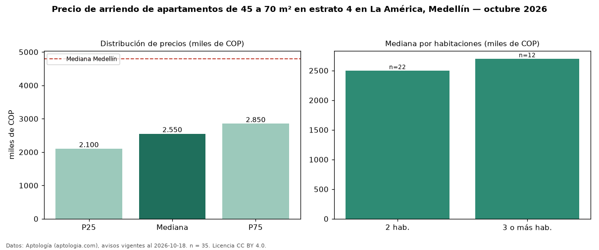

Precio de arriendo de apartamentos de 45 a 70 m² en estrato 4 en La América, Medellín — octubre 2026
Con 35 avisos vigentes, el canon mediano de apartamentos de 45 a 70 m² en estrato 4 en arriendo en La América, Medellín es COP 2,55 millones al mes. Frente a la mediana de los apartamentos en estrato 4 en arriendo de La América (COP 2,80 millones, n = 115), queda 9 % por debajo; este segmento reúne el 30 % de esos avisos. Por metro cuadrado, la mediana es COP 41.927/m² al mes (n = 34), 8 % por encima de los apartamentos en estrato 4 en arriendo de La América (COP 38.787/m²). El área mediana anunciada es 60 m². El segmento con más oferta es el de 2 habitaciones (22 avisos, mediana COP 2,50 millones); pasar de 2 habitaciones a 3 o más habitaciones cambia la mediana +8 %. La mediana de todos los apartamentos en arriendo de Medellín es COP 4,80 millones (−47 % de diferencia). La mitad central de los avisos va de COP 2,10 millones a COP 2,85 millones (razón 1,4), una dispersión baja. Datos: Aptología (aptologia.com), CC BY 4.0 — https://www.aptologia.com/arriendo/medellin/la-america. Archivos: PDF, CSV con las cifras y gráfica PNG.

| Avisos únicos | 35 |
|---|---|
| Percentil 25 | COP 2.100.000 |
| Mediana | COP 2.550.000 |
| Percentil 75 | COP 2.850.000 |
| Mediana por m² | COP 41.927 |
Fuente: avisos vigentes de portales inmobiliarios recopilados por Aptología, deduplicados (mínimo 30 avisos únicos por celda). Precios pedidos, no cerrados. Fecha: 2026-10-18.